Os biomas são as regiões do jogo,geralmente definidos por estruturas típicas da área e pisos diferentes ,por exemplo : florestas possuem uma quantidade absurdas de pinheiros e uma grama com um tom verde escuro enquanto as savanas não possuem árvores mas possuem grande quantidade de grama (
 ) e um piso de grama amarelado.
) e um piso de grama amarelado.
Bioma comum geralmente sem ameaças. É um bioma bem agradável,possui vários recursos básicos como gravetos ( ),grama(
),grama( ),pinheiros(
),pinheiros( ),árvores temperadas(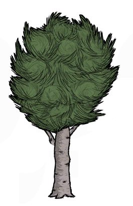),frutas silvestres(
),árvores temperadas(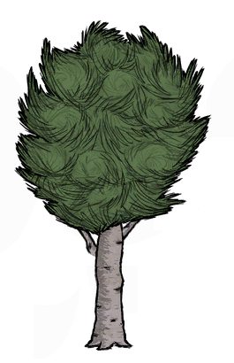),frutas silvestres( )sílex(),flores(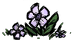) e buracos de toupeiras () Há também a presença de lagos que podem user utilizados para pesca () e spawnam sapos(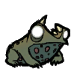).O portal indica o Spawn(local de “nascença” de uma entidade) dos jogadores sempre se encontrara ao redor de uma Grassland.
)sílex(),flores(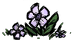) e buracos de toupeiras () Há também a presença de lagos que podem user utilizados para pesca () e spawnam sapos(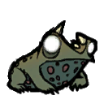).O portal indica o Spawn(local de “nascença” de uma entidade) dos jogadores sempre se encontrara ao redor de uma Grassland.
Bioma comum um tanto perigoso devido a presença de vários ninhos de aranhas(). Possui vários pinheiros e ocasionalmente pedregulhos(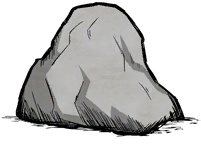 e ),ninhos de aranhas() ,covas()cogumelos() e casas de homen-porcos ( ).
).
Bioma comum geralmente sem ameaças . Possui várias gramas,tocas de coelho(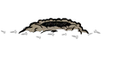) e ocasionalmente pedregulhos () e ninhos de aranha (). Savanna maiores também possuem a chance de ter grupos de beefalos (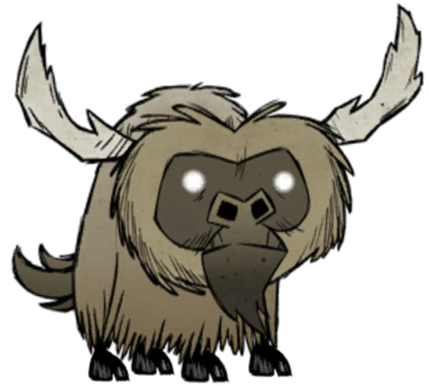) mobs (animais) largos que podem oferecer proteção de ataques externos caso não estejam em período de acasalamento(identificável caso a sua traseira esteja avermelhada).
Bioma incomum com um certo nível de ameaça. Abudante em pedregulhos ( e ),pedras ()e sílex () e ocasionalmente ninhos de pássaro-alto () e certos recursos básicos como grama e gravetos. Geralmente o Mosaico e o Cemitério estão conectados um ao outro.
É um bioma raro e único por mundo e inicialmente inofensivo mas ao desenterrar as covas pode se tornar um pouco perigoso.Abundante em covas ( ) e ouro (). Geralmente conectado ao bioma Mosaico.
) e ouro (). Geralmente conectado ao bioma Mosaico.
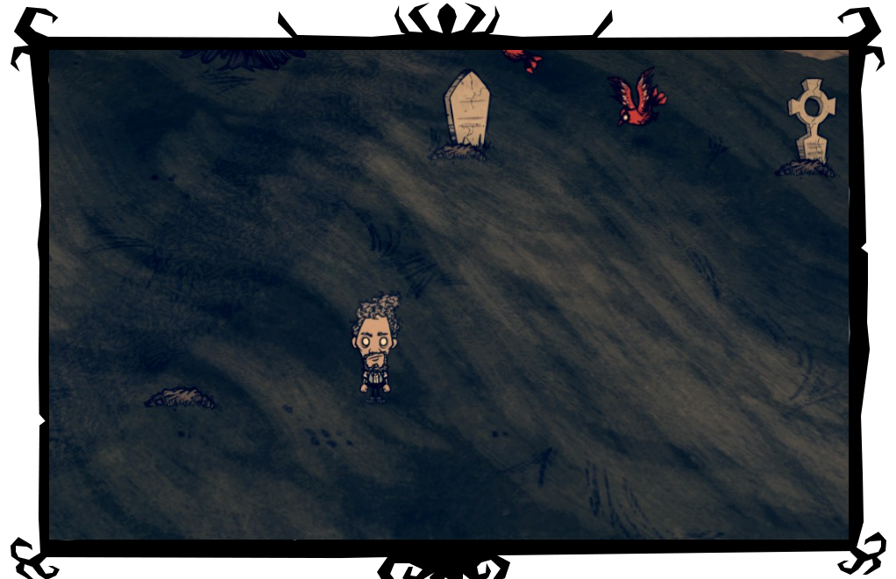)
É um bioma incomun e geralmente sem ameaças. Abundante em pedregulhos ( e ) e ocasionalmente com ninhos de pássaros-altos e urubus voando sob o bioma.
É um bioma incomun e geralmente sem ameaças. Abundante em árvores temperadas(),cogumelos(),buracos de toupeiras () e casas de porco-homen() e ocasionalmente tocas de gato-xinim ( ). É possível também encontrar a vila do porco-rei nesse bioma, com varias casas de homen-porcos e o próprio porco-rei (uma fonte ilimitada de ouro através da negociação de carne e derivados). Próximo a vila também se encontra a estatua de Glommer () e uma flauta ao seu lado, se possível visite a estatua de Glommer durante a lua cheia e descobrira algo novo!
). É possível também encontrar a vila do porco-rei nesse bioma, com varias casas de homen-porcos e o próprio porco-rei (uma fonte ilimitada de ouro através da negociação de carne e derivados). Próximo a vila também se encontra a estatua de Glommer () e uma flauta ao seu lado, se possível visite a estatua de Glommer durante a lua cheia e descobrira algo novo!
É um bioma raro e perigoso ,geralmente a sua entrada é cercada por tocas de lobos e no interior do deserto se encontra um Boss extremamente perigoso mas que não ira sair de seu território que é marcado por lagos de magma.Abundante em pedregulhos ( e ),cactus( ) e erva daninhas (
) e erva daninhas ( ) e ocasionalmente com árvores espinhosas (). Há somente dois desertos por mapa,um deles sendo o que contem boss Dragonfly e o outro contem o Oasis.
) e ocasionalmente com árvores espinhosas (). Há somente dois desertos por mapa,um deles sendo o que contem boss Dragonfly e o outro contem o Oasis.
É um bioma raro e geralmente sem ameaças. É o segundo tipo de deserto encontrado no mapa.Abundante em cactus e urubus voando sobre o bioma. O Oasis possui a aparência de um deserto comum porem dentro do bioma é possível achar uma parte esverdeada com um lago seco (o qual se enche durante o verão) rodeado por árvores temperadas(). Também é possível achar de 1 a 2 grupos de bodes-elétricos () no bioma.Durante o verão,uma tempestade de areia ira surgir nesse bioma,limitando a visão e reduzindo a velocidade porém é possível amenizar os efeitos utilizando um óculos (cuja receita pode ser obtida pescando no lago do Oasis). O boss “Antlion”( ) também surgira durante o verão nesse bioma,e aceitara oferendas (pedras,ovos e brinquedos) caso contrario ele criara terremotos destruindo estruturas próximas, também é possível matar-lo caso não prefira oferecer presentes.
) também surgira durante o verão nesse bioma,e aceitara oferendas (pedras,ovos e brinquedos) caso contrario ele criara terremotos destruindo estruturas próximas, também é possível matar-lo caso não prefira oferecer presentes.
É um bioma raro e perigoso.Abundante em tentáculos () ofensivos que se escondem sob o solo,árvores espinhosas (),juncos () ,lagos sujos que spawnam mosquitos irritantes() e casas de peixe-homem( ),criaturas altamente territoriais.
),criaturas altamente territoriais.
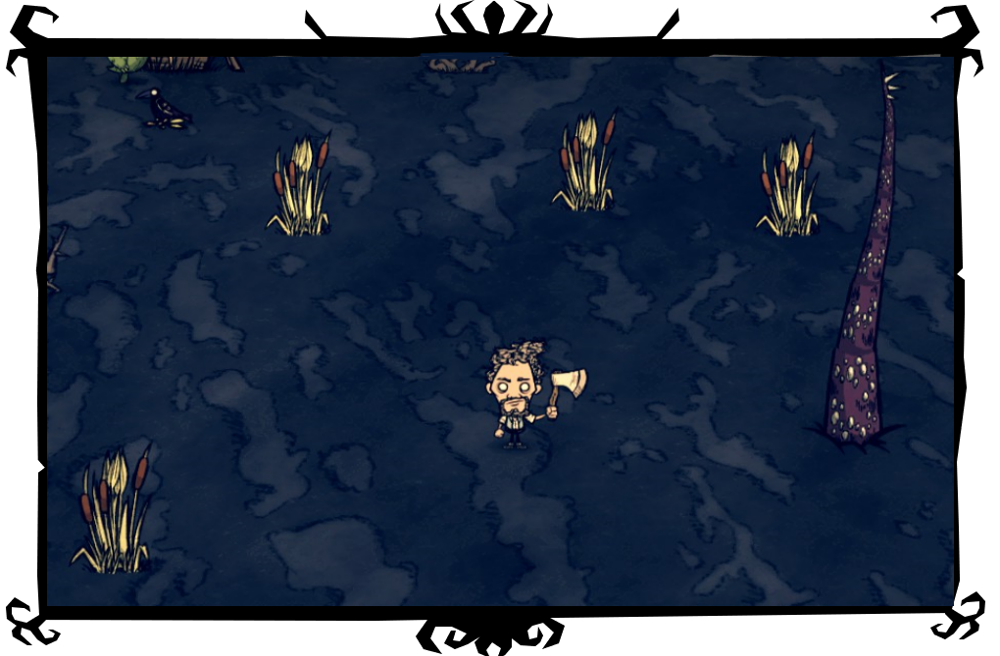